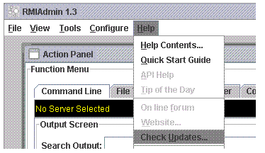
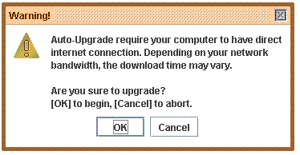
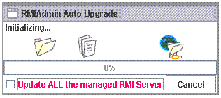
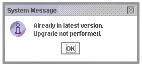
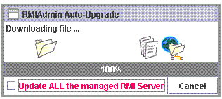
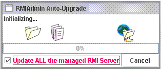
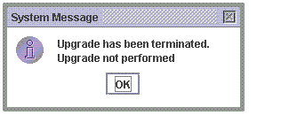
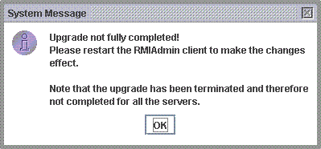

Auto-Upgrade is a new service that allow you easily get updates for RMIAdmin and upgrade your client and servers.
Benefits:
-
Improve your RMIAdmin’s health and security.
Update your computer with the latest software from RMIAdmin to boost the security and reliability of your RMIAdmin client(s) and server(s).
-
Easy and flexible.
RMIAdmin Auto-Upgrade is easy to set up and use. Download and install updates automatically, or customize the choices that are right for you.
-
New features, better performance.
Every month, RMIAdmin releases new function or features that increase the performance and functionality of your RMIAdmin. Get enhancements as soon as they are available using Auto-Upgrade.
Follow the instructions below to use the Auto-Upgrade:
-
First, go to the top menu bar, select "Help" -> "Check Updates...".

-
The system will than prompt a warning message, seeking your confirmation to proceed the upgrade.

Simply click "OK" if you would like to proceed.
-
The system will then automatically check the version on your computer with that
available from RMIAdmin's official website. If the version found from your computer
is not the latest one, upgrade will immediately proceed.

Else if your RMIAdmin is already the latest version, the upgrade will be cancelled with the following message prompt.

-
Once the upgrade is started, the system will download the lastest RMIAdmin software
package from the internet to your computer
(where the donwload time may vary depends on your bandwidth).

-
After your RMIAdmin client has been upgraded, we strongly recommended
you also upgrade the RMIAdmin software on all of your managed server in order
to take effect of all the new features and bug fixes.
If you would like to perform the upgrade to all server(s) immediately after your client has been upgraded, simply tick the checkbox to indicate that you would like to have all the managed server(s) upgraded.

* note that the upgrade of server will be performed one by one and not simultaneously.
To terminate the upgrade immediately, simply click the "Cancel" button.
Please note that if you click the "Cancel" button during the download stage, the entire upgrade activity will be abandoned and in this case, your RMIAdmin client and all the managed server(s) will NOT be upgraded.

Yet if the "Cancel" button is clicked during the upgrade to server, then the upgrade will be abandoned from the next remaining server(s). In this case, your RMIAdmin client has BEEN upgraded together with those managed server(s) at the point when you cancel the upgrade.

Related Topics:
|
|
Copyright 2005 © RMIAdmin. All rights reserved. |